R a la particularité d’être un logiciel open-source et développé par la communauté. Ce n’est pas le cas d’autres options comme SAS, un logiciel payant qui a été pendant longtemps l’outil de travail des institutions de la statistique publique française. Il existe donc souvent plusieurs façons de faire une même opération, à partir du R de base si les fonctions adaptées existent ou grâce aux fonctions offertes par les différentes extensions. Ce TD présentera uniquement l’univers tidyverse pour son exhaustivité et l’existence d’une documentation en ligne très importante.
Le terme tidyverse est une contraction de tidy (qu’on pourrait traduire par “bien rangé”) et de universe. Il s’agit en fait d’une collection d’extensions conçues pour travailler ensemble et basées sur une philosophie commune :
ggplot2 (visualisation)
dplyr (manipulation des données)
tidyr (remise en forme des données)
purrr (programmation)
readr (importation de données)
tibble (tableaux de données)
forcats (variables qualitatives)
stringr (chaînes de caractères)
lubridate (manipulation de dates)
Un des objectifs de ces extensions est de fournir des fonctions avec une syntaxe cohérente, qui fonctionnent bien ensemble, et qui retournent des résultats prévisibles.
Manipuler les données avec dplyr
dplyr est une extension facilitant le traitement et la manipulation de données contenues dans une ou plusieurs tables. Elle propose une syntaxe claire et cohérente, sous formes de verbes, pour la plupart des opérations de ce type.
Préparation
dplyr fait partie du coeur du tidyverse, elle est donc chargée automatiquement avec :
library(tidyverse)
── Attaching core tidyverse packages ──────────────────────── tidyverse 2.0.0 ──
✔ dplyr 1.1.3 ✔ readr 2.1.4
✔ forcats 1.0.0 ✔ stringr 1.5.1
✔ ggplot2 3.4.4 ✔ tibble 3.2.1
✔ lubridate 1.9.3 ✔ tidyr 1.3.0
✔ purrr 1.0.2
── Conflicts ────────────────────────────────────────── tidyverse_conflicts() ──
✖ dplyr::filter() masks stats::filter()
✖ dplyr::lag() masks stats::lag()
ℹ Use the conflicted package (<http://conflicted.r-lib.org/>) to force all conflicts to become errors
Dans ce qui suit on va utiliser le jeu de données nycflights13, contenu dans l’extension du même nom (qu’il faut donc avoir installé). Celui-ci correspond aux données de tous les vols au départ d’un des trois aéroports de New-York en 2013. Il a la particularité d’être réparti en trois tables :
flights contient des informations sur les vols : date, départ, destination, horaires, retard…
airports contient des informations sur les aéroports
airlines contient des données sur les compagnies aériennes
On va charger les trois tables du jeu de données :
library(nycflights13)## Chargement des trois tablesdata(flights)data(airports)data(airlines)
Trois objets correspondant aux trois tables ont dû apparaître dans votre environnement.
Les verbes de dplyr
La manipulation de données avec dplyr se fait en utilisant un nombre réduit de verbes, qui correspondent chacun à une action différente appliquée à un tableau de données.
Parfois, on veut créer une nouvelle variable en partant des valeurs d’une ou plusieurs autres variables. Dans ce cas on peut utiliser les fonctions ifelse pour les cas les plus simples, ou case_when pour les cas plus complexes.
ifelse
ifelse prend trois arguments : un test, une valeur à renvoyer si le test est vrai, et une valeur à renvoyer si le test est faux.
Voici un exemple simple :
v <-c(12, 14, 8, 16)ifelse(v >10, "Supérieur à 10", "Inférieur à 10")
[1] "Supérieur à 10" "Supérieur à 10" "Inférieur à 10" "Supérieur à 10"
La fonction permet d’utiliser des tests combinant plusieurs variables. Par exemple, imaginons qu’on souhaite créer une nouvelle variable indiquant les hommes de plus de 60 ans :
library(questionr)data(hdv2003)hdv2003$statut <-ifelse( hdv2003$sexe =="Homme"& hdv2003$age >60,"Homme de plus de 60 ans","Autre")table(hdv2003$statut)
Autre Homme de plus de 60 ans
1778 222
case_when
case_when est une généralisation du ifelse qui permet d’indiquer plusieurs tests et leurs valeurs associées.
Imaginons qu’on souhaite créer une nouvelle variable permettant d’identifier les hommes de plus de 60 ans, les femmes de plus de 60 ans, et les autres. On peut utiliser la syntaxe suivante :
hdv2003$statut <-case_when( hdv2003$age >60& hdv2003$sexe =="Homme"~"Homme de plus de 60 ans", hdv2003$age >60& hdv2003$sexe =="Femme"~"Femme de plus de 60 ans",TRUE~"Autre")table(hdv2003$statut)
Autre Femme de plus de 60 ans Homme de plus de 60 ans
1512 266 222
case_when prend en arguments une série d’instructions sous la forme condition ~ valeur. Il les exécute une par une, et dès qu’une condition est vraie, il renvoie la valeur associée.
La dernière clause TRUE ~ "Autre" permet d’assigner une valeur à toutes les lignes pour lesquelles aucune des conditions précédentes n’est vraie.
Warning
Attention : comme les conditions sont testées l’une après l’autre et que la valeur renvoyée est celle correspondant à la première condition vraie, l’ordre de ces conditions est très important. Il faut absolument aller du plus spécifique au plus général.
Pour illustrer cet avertissement, on pourra noter que le recodage suivant ne fonctionne pas :
hdv2003$statut <-case_when( hdv2003$sexe =="Homme"~"Homme", hdv2003$sexe =="Homme"& hdv2003$age >60~"Homme de plus de 60 ans",TRUE~"Autre")table(hdv2003$statut)
Autre Homme
1101 899
Comme la condition sexe == "Homme" est plus générale que sexe == "Homme" & age > 60, cette deuxième condition n’est jamais testée, et on n’obtiendra donc jamais la valeur correspondante.
Pour que ce recodage fonctionne il faut donc changer l’ordre des conditions pour aller du plus spécifique au plus général.
hdv2003$statut <-case_when( hdv2003$sexe =="Homme"& hdv2003$age >60~"Homme de plus de 60 ans", hdv2003$sexe =="Homme"~"Homme",TRUE~"Autre")
slice
Le verbe slice sélectionne des lignes du tableau selon leur position. On lui passe un chiffre ou un vecteur de chiffres.
Si on souhaite sélectionner la 345e ligne du tableau airports :
slice(airports, 345)
# A tibble: 1 × 8
faa name lat lon alt tz dst tzone
<chr> <chr> <dbl> <dbl> <dbl> <dbl> <chr> <chr>
1 CYF Chefornak Airport 60.1 -164. 40 -9 A America/Anchorage
Si on veut sélectionner les 5 premières lignes :
slice(airports, 1:5)
# A tibble: 5 × 8
faa name lat lon alt tz dst tzone
<chr> <chr> <dbl> <dbl> <dbl> <dbl> <chr> <chr>
1 04G Lansdowne Airport 41.1 -80.6 1044 -5 A America/New…
2 06A Moton Field Municipal Airport 32.5 -85.7 264 -6 A America/Chi…
3 06C Schaumburg Regional 42.0 -88.1 801 -6 A America/Chi…
4 06N Randall Airport 41.4 -74.4 523 -5 A America/New…
5 09J Jekyll Island Airport 31.1 -81.4 11 -5 A America/New…
slice propose plusieurs variantes utiles, dont slice_head et slice_tail, qui permettent de sélectionner les premières ou les dernières lignes du tableau (on peut spécifier le nombre de lignes souhaitées avec n, ou la proportion avec prop).
slice_tail(airports, n =3)
# A tibble: 3 × 8
faa name lat lon alt tz dst tzone
<chr> <chr> <dbl> <dbl> <dbl> <dbl> <chr> <chr>
1 ZWI Wilmington Amtrak Station 39.7 -75.6 0 -5 A America/New_York
2 ZWU Washington Union Station 38.9 -77.0 76 -5 A America/New_York
3 ZYP Penn Station 40.8 -74.0 35 -5 A America/New_York
slice_head(airlines, prop =0.2)
# A tibble: 3 × 2
carrier name
<chr> <chr>
1 9E Endeavor Air Inc.
2 AA American Airlines Inc.
3 AS Alaska Airlines Inc.
Autres variantes utiles, slice_min et slice_max permettent de sélectionner les lignes avec les valeurs les plus grandes ou les plus petite d’une variable donnée. Ainsi, la commande suivante sélectionne le vol ayant le retard au départ le plus faible.
On peut aussi spécifier le nombre de lignes souhaitées, par exemple la commande suivante retourne les 5 aéroports avec l’altitude la plus élevée (en cas de valeurs ex-aequo, il se peut que le nombre de lignes retournées soit plus élevé que celui demandé).
slice_max(airports, alt, n =5)
# A tibble: 5 × 8
faa name lat lon alt tz dst tzone
<chr> <chr> <dbl> <dbl> <dbl> <dbl> <chr> <chr>
1 TEX Telluride 38.0 -108. 9078 -7 A America/D…
2 TVL Lake Tahoe Airport 38.9 -120. 8544 -8 A America/L…
3 ASE Aspen Pitkin County Sardy Field 39.2 -107. 7820 -7 A America/D…
4 GUC Gunnison - Crested Butte 38.5 -107. 7678 -7 A America/D…
5 BCE Bryce Canyon 37.7 -112. 7590 -7 A America/D…
filter
filter sélectionne des lignes d’une table selon une condition. On lui passe en paramètre un test, et seules les lignes pour lesquelles ce test renvoie TRUE (vrai) sont conservées. Pour plus d’informations sur les tests et leur syntaxe, voir la fin de la première séance.
Par exemple, si on veut sélectionner les vols du mois de janvier, on peut filtrer sur la variable month de la manière suivante :
Si on passe plusieurs arguments à filter, celui-ci rajoute automatiquement une condition et entre les conditions. La commande précédente peut donc être écrite de la manière suivante, avec le même résultat :
On peut également placer des fonctions dans les tests, qui nous permettent par exemple de sélectionner les vols ayant une distance supérieure à la distance médiane :
Si on fait précéder le nom d’un -, la colonne est éliminée plutôt que sélectionnée :
select(airports, -lat, -lon)
# A tibble: 1,458 × 6
faa name alt tz dst tzone
<chr> <chr> <dbl> <dbl> <chr> <chr>
1 04G Lansdowne Airport 1044 -5 A America/New_York
2 06A Moton Field Municipal Airport 264 -6 A America/Chicago
3 06C Schaumburg Regional 801 -6 A America/Chicago
4 06N Randall Airport 523 -5 A America/New_York
5 09J Jekyll Island Airport 11 -5 A America/New_York
6 0A9 Elizabethton Municipal Airport 1593 -5 A America/New_York
7 0G6 Williams County Airport 730 -5 A America/New_York
8 0G7 Finger Lakes Regional Airport 492 -5 A America/New_York
9 0P2 Shoestring Aviation Airfield 1000 -5 U America/New_York
10 0S9 Jefferson County Intl 108 -8 A America/Los_Angeles
# ℹ 1,448 more rows
select comprend toute une série de fonctions facilitant la sélection de colonnes multiples. Par exemple, starts_with, ends_width, contains ou matches permettent d’exprimer des conditions sur les noms de variables.
Une variante de select est rename2, qui permet de renommer des colonnes. On l’utilise en lui passant des paramètres de la forme nouveau_nom = ancien_nom. Ainsi, si on veut renommer les colonnes lon et lat de airports en longitude et latitude :
rename(airports, longitude = lon, latitude = lat)
# A tibble: 1,458 × 8
faa name latitude longitude alt tz dst tzone
<chr> <chr> <dbl> <dbl> <dbl> <dbl> <chr> <chr>
1 04G Lansdowne Airport 41.1 -80.6 1044 -5 A Amer…
2 06A Moton Field Municipal Airpo… 32.5 -85.7 264 -6 A Amer…
3 06C Schaumburg Regional 42.0 -88.1 801 -6 A Amer…
4 06N Randall Airport 41.4 -74.4 523 -5 A Amer…
5 09J Jekyll Island Airport 31.1 -81.4 11 -5 A Amer…
6 0A9 Elizabethton Municipal Airp… 36.4 -82.2 1593 -5 A Amer…
7 0G6 Williams County Airport 41.5 -84.5 730 -5 A Amer…
8 0G7 Finger Lakes Regional Airpo… 42.9 -76.8 492 -5 A Amer…
9 0P2 Shoestring Aviation Airfield 39.8 -76.6 1000 -5 U Amer…
10 0S9 Jefferson County Intl 48.1 -123. 108 -8 A Amer…
# ℹ 1,448 more rows
Si les noms de colonnes comportent des espaces ou des caractères spéciaux, on peut les entourer de guillemets (") ou de quotes inverses (`) :
mutate permet de créer de nouvelles colonnes dans le tableau de données, en général à partir de variables existantes.
Par exemple, la table flights contient la durée du vol en minutes.. Si on veut créer une nouvelle variable duree_h avec cette durée en heures, on peut faire :
On peut créer plusieurs nouvelles colonnes en une seule commande, et les expressions successives peuvent prendre en compte les résultats des calculs précédents. L’exemple suivant convertit d’abord la durée en heures dans une variable duree_h et la distance en kilomètres dans une variable distance_km, puis utilise ces nouvelles colonnes pour calculer la vitesse en km/h.
L’avantage d’utiliser mutate est double. D’abord il permet d’éviter d’avoir à saisir le nom du tableau de données dans les conditions d’un ifelse ou d’un case_when :
Ensuite, il permet aussi d’intégrer ces recodages dans un pipeline de traitement de données, concept présenté dans la section suivante.
Enchaîner les opérations avec le pipe
Quand on manipule un tableau de données, il est très fréquent d’enchaîner plusieurs opérations. On va par exemple extraire une sous-population avec filter, sélectionner des colonnes avec select puis trier selon une variable avec arrange, etc.
Quand on veut enchaîner des opérations, on peut le faire de différentes manières. La première est d’effectuer toutes les opérations en une fois en les “emboîtant” :
arrange(select(filter(flights, dest =="LAX"), dep_delay, arr_delay), dep_delay)
les opérations apparaissent dans l’ordre inverse de leur réalisation. Ici on effectue d’abord le filter, puis le select, puis le arrange, alors qu’à la lecture du code c’est le arrange qui apparaît en premier.
Il est difficile de voir quel paramètre se rapporte à quelle fonction
Une autre manière de faire est d’effectuer les opérations les unes après les autres, en stockant les résultats intermédiaires dans un objet temporaire :
tmp <-filter(flights, dest =="LAX")tmp <-select(tmp, dep_delay, arr_delay)arrange(tmp, dep_delay)
C’est nettement plus lisible, l’ordre des opérations est le bon, et les paramètres sont bien rattachés à leur fonction. Par contre, ça reste un peu “verbeux”, et on crée un objet temporaire tmp dont on n’a pas réellement besoin.
Pour simplifier et améliorer encore la lisibilité du code, on va utiliser un nouvel opérateur, baptisé pipe. Le pipe se note %>%, et son fonctionnement est le suivant : si j’exécute expr %>% f, alors le résultat de l’expression expr, à gauche du pipe, sera passé comme premier argument à la fonction f, à droite du pipe, ce qui revient à exécuter f(expr).
Ainsi les deux expressions suivantes sont rigoureusement équivalentes :
À chaque fois, le résultat de ce qui se trouve à gauche du pipe est passé comme premier argument à ce qui se trouve à droite : on part de l’objet flights, qu’on passe comme premier argument à la fonction filter, puis on passe le résultat de ce filter comme premier argument du select.
Le résultat final est le même avec les deux syntaxes, mais avec le pipe l’ordre des opérations correspond à l’ordre naturel de leur exécution, et on n’a pas eu besoin de créer d’objet intermédiaire.
Si la liste des fonctions enchaînées est longue, on peut les répartir sur plusieurs lignes à condition que l’opérateur %>% soit en fin de ligne :
Évidemment, il est naturel de vouloir récupérer le résultat final d’un pipeline pour le stocker dans un objet. On peut stocker le résultat du pipeline ci-dessus dans un nouveau tableau delay_la de la manière suivante :
Dans ce cas, delay_la contiendra le tableau final, obtenu après application des trois instructions filter, select et arrange.
Cette notation n’est pas forcément très intuitive au départ : il faut bien comprendre que c’est le résultat final, une fois application de toutes les opérations du pipeline, qui est renvoyé et stocké dans l’objet en début de ligne.
Une manière de le comprendre peut être de voir que la notation suivante :
Un élément très important de dplyr est la fonction group_by. Elle permet de définir des groupes de lignes à partir des valeurs d’une ou plusieurs colonnes. Par exemple, on peut grouper les vols selon leur mois :
Par défaut ceci ne fait rien de visible, à part l’apparition d’une mention Groups dans l’affichage du résultat. Mais à partir du moment où des groupes ont été définis, les verbes comme slice, mutate ou summarise vont en tenir compte lors de leurs opérations.
Par exemple, si on applique slice à un tableau préalablement groupé, il va sélectionner les lignes aux positions indiquées pour chaque groupe. Ainsi la commande suivante affiche le premier vol de chaque mois, selon leur ordre d’apparition dans le tableau :
Plus utile, en utilisant une variante comme slice_min ou slice_max, on peut sélectionner les lignes ayant les valeurs les plus grandes ou les plus petites pour chaque groupe. Par exemple la commande suivant sélectionne, pour chaque mois de l’année, le vol ayant eu le retard le plus important.
Idem pour mutate : les opérations appliquées lors du calcul des valeurs des nouvelles colonnes sont appliquées groupe de lignes par groupe de lignes. Dans l’exemple suivant, on ajoute une nouvelle colonne qui contient le retard moyen pour chaque compagnie aérienne. Cette valeur est donc différente d’une compagnie à une autre, mais identique pour tous les vols d’une même compagnie :
# A tibble: 336,776 × 4
# Groups: carrier [16]
carrier dep_delay median_delay delay_carrier
<chr> <dbl> <dbl> <chr>
1 UA 2 0 Supérieur
2 UA 4 0 Supérieur
3 AA 2 -3 Supérieur
4 B6 -1 -1 Inférieur ou égal
5 DL -6 -2 Inférieur ou égal
6 UA -4 0 Inférieur ou égal
7 B6 -5 -1 Inférieur ou égal
8 EV -3 -1 Inférieur ou égal
9 B6 -3 -1 Inférieur ou égal
10 AA -2 -3 Supérieur
# ℹ 336,766 more rows
group_by peut aussi être utile avec filter, par exemple pour sélectionner pour chaque mois les vols avec un retard au départ plus élevé que le retard moyen ce mois-ci.
Attention : la clause group_by marche pour les verbes déjà vus précédemment, sauf pour arrange, qui par défaut trie la table sans tenir compte des groupes. Pour obtenir un tri par groupe, il faut lui ajouter l’argument .by_group = TRUE.
On peut voir la différence en comparant les deux résultats suivants :
summarise permet d’agréger les lignes du tableau en effectuant une opération “résumée” sur une ou plusieurs colonnes. Par exemple, si on souhaite connaître les retards moyens au départ et à l’arrivée pour l’ensemble des vols du tableau flights :
Cette fonction est en général utilisée avec group_by, puisqu’elle permet du coup d’agréger et résumer les lignes du tableau groupe par groupe. Si on souhaite calculer le délai maximum, le délai minimum et le délai moyen au départ pour chaque mois, on pourra faire :
summarise dispose d’un opérateur spécial, n(), qui retourne le nombre de lignes du groupe. Ainsi si on veut le nombre de vols par destination, on peut utiliser :
flights %>%group_by(dest) %>%summarise(nb =n())
# A tibble: 105 × 2
dest nb
<chr> <int>
1 ABQ 254
2 ACK 265
3 ALB 439
4 ANC 8
5 ATL 17215
6 AUS 2439
7 AVL 275
8 BDL 443
9 BGR 375
10 BHM 297
# ℹ 95 more rows
n() peut aussi être utilisée avec filter et mutate.
À noter que quand on veut compter le nombre de lignes par groupe, il est plus simple d’utiliser directement la fonction count. Ainsi le code suivant est identique au précédent :
flights %>%count(dest)
# A tibble: 105 × 2
dest n
<chr> <int>
1 ABQ 254
2 ACK 265
3 ALB 439
4 ANC 8
5 ATL 17215
6 AUS 2439
7 AVL 275
8 BDL 443
9 BGR 375
10 BHM 297
# ℹ 95 more rows
Grouper selon plusieurs variables
On peut grouper selon plusieurs variables à la fois, il suffit de les indiquer dans la clause du group_by. Le pipeline suivant calcule le retard moyen au départ pour chaque mois et pour chaque destination, et trie le résultat par retard décroissant :
On peut également utiliser count sur plusieurs variables. Les commandes suivantes comptent le nombre de vols pour chaque couple aéroport de départ / aéroport d’arrivée, et trie le résultat par nombre de vols décroissant. Ici la colonne qui contient le nombre de vols, créée par count, s’appelle n par défaut :
# A tibble: 224 × 3
origin dest n
<chr> <chr> <int>
1 JFK LAX 11262
2 LGA ATL 10263
3 LGA ORD 8857
4 JFK SFO 8204
5 LGA CLT 6168
6 EWR ORD 6100
7 JFK BOS 5898
8 LGA MIA 5781
9 JFK MCO 5464
10 EWR BOS 5327
# ℹ 214 more rows
On peut utiliser plusieurs opérations de groupage dans le même pipeline. Ainsi, si on souhaite déterminer le couple aéroport de départ / aéroport d’arrivée ayant le retard moyen au départ le plus élevé pour chaque mois de l’année, on devra procéder en deux étapes :
d’abord grouper selon mois, aéroports d’origine et d’arrivée pour calculer le retard moyen
puis grouper uniquement selon le mois pour sélectionner le mois avec le retard moyen maximal.
Lorsqu’on effectue un group_by suivi d’un summarise, le tableau résultat est automatiquement dégroupé de la dernière variable de regroupement. Ainsi le tableau généré par le code suivant est seulement groupé par month et origin :
dplyr nous le signale d’ailleurs via un message d’avertissement : summarise() has grouped output by 'month', 'origin'.
Ce dégroupage progressif peut permettre “d’enchaîner” les opérations groupées. Dans l’exemple suivant on calcule le retard moyen au départ par destination et on conserve les trois retards les plus importants pour chaque mois.
flights %>%group_by(month, dest) %>%summarise(retard_moyen =mean(dep_delay, na.rm =TRUE)) %>%slice_max(retard_moyen, n =3)
`summarise()` has grouped output by 'month'. You can override using the
`.groups` argument.
On peut à tout moment “dégrouper” un tableau à l’aide de ungroup. C’est nécessaire, dans l’exemple précédent, si on veut seulement récupérer les trois retards les plus importants pour l’ensemble des couples mois / destination.
`summarise()` has grouped output by 'month'. You can override using the
`.groups` argument.
# A tibble: 3 × 3
month dest retard_moyen
<int> <chr> <dbl>
1 12 BZN 75
2 7 TUL 72.6
3 3 DSM 71.0
On peut aussi spécifier précisément le comportement de dégroupage de summarise en lui fournissant un argument supplémentaire .groups qui peut prendre notamment les valeurs suivantes :
"drop_last" : dégroupe seulement de la dernière variable de groupage
"drop" : dégroupe totalement le tableau résultat (équivaut à l’application d’un ungroup)
"keep" : conserve toutes les variables de groupage
Ce concept de dégroupage successif peut être un peu déroutant de prime abord. Il est donc utile de faire attention aux avertissements affichés par ces opérations, et il ne faut pas hésiter à ajouter un ungroup en fin de pipeline si on sait qu’on ne souhaite pas utiliser les groupes encore existants par la suite.
À noter que la fonction count, de son côté, renvoie un tableau non groupé.
Sélectionner la dixième ligne du tableau des aéroports (airports).
Sélectionner les 5 premières lignes de la table airlines.
Sélectionner l’aéroport avec l’altitude la plus basse.
Exercice 1.2
Sélectionnez les vols du mois de juillet (variable month).
Sélectionnez les vols avec un retard à l’arrivée (variable arr_delay) compris entre 5 et 15 minutes.
Sélectionnez les vols des compagnies Delta, United et American (codes DL, UA et AA de la variable carrier).
Exercice 1.3
Triez la table flights par retard au départ décroissant.
Exercice 1.4
Sélectionnez les colonnes name, lat et lon de la table airports
Sélectionnez toutes les colonnes de la table airports sauf les colonnes tz et tzone
Sélectionnez toutes les colonnes de la table flights dont les noms se terminent par “delay”.
Dans la table airports, renommez la colonne alt en altitude et la colonne tzone en fuseau_horaire.
Exercice 1.5
Dans la table airports, la colonne alt contient l’altitude de l’aéroport en pieds. Créer une nouvelle variable alt_m contenant l’altitude en mètres (on convertit des pieds en mètres en les divisant par 3.2808). Sélectionner dans la table obtenue uniquement les deux colonnes alt et alt_m.
Enchaîner des opérations
Exercice 2.1
Réécrire le code de l’exercice précédent en utilisant le pipe%>%.
Exercice 2.2
En utilisant le pipe, sélectionnez les vols à destination de San Francico (code SFO de la variable dest) et triez-les selon le retard au départ décroissant (variable dep_delay).
Exercice 2.3
Sélectionnez les vols des mois de septembre et octobre, conservez les colonnes dest et dep_delay, créez une nouvelle variable retard_h contenant le retard au départ en heures, et conservez uniquement les 5 lignes avec les plus grandes valeurs de retard_h.
group_by et summarise
Exercice 3.1
Affichez le nombre de vols par mois.
Triez la table résultat selon le nombre de vols croissant.
Exercice 3.2
Calculer la distance moyenne des vols selon l’aéroport de départ (variable origin).
Exercice 3.3
Calculer le nombre de vols à destination de Los Angeles (code LAX) pour chaque mois de l’année.
Exercice 3.4
Calculer le nombre de vols selon le mois et la destination.
Ne conserver, pour chaque mois, que la destination avec le nombre maximal de vols.
Exercice 3.5
Calculer le nombre de vols selon le mois. Ajouter une colonne comportant le pourcentage de vols annuels réalisés par mois.
Exercice 3.6
Calculer, pour chaque aéroport de départ et de destination, la durée moyenne des vols (variable air_time). Pour chaque aéroport de départ, ne conserver que la destination avec la durée moyenne la plus longue.
Visualiser avec ggplot2
ggplot2 est une extension du tidyverse qui permet de générer des graphiques avec une syntaxe cohérente et puissante. Elle nécessite l’apprentissage d’un “mini-langage” supplémentaire, mais permet la construction de graphiques complexes de manière efficace.
Dans ce qui suit on utilisera le jeu de données issu du recensement de la population de 2018 inclus dans l’extension questionr (résultats partiels concernant les communes de plus de 2000 habitants de France métropolitaine). On charge ces données et on en extrait les données de 5 départements (l’utilisation de la fonction filter sera expliquée Section 1.3.4) :
library(questionr)data(rp2018)rp <-filter( rp2018, departement %in%c("Oise", "Rhône", "Hauts-de-Seine", "Lozère", "Bouches-du-Rhône"))
Initialisation
Un graphique ggplot2 s’initialise à l’aide de la fonction ggplot(). Les données représentées graphiquement sont toujours issues d’un tableau de données (data frame ou tibble), qu’on passe en argument data à la fonction :
ggplot(data = rp)
## Ou, équivalentggplot(rp)
On a défini la source de données, il faut maintenant ajouter des éléments de représentation graphique. Ces éléments sont appelés des geom, et on les ajoute à l’objet graphique de base avec l’opérateur +.
Un des geom les plus simples est geom_histogram. On peut l’ajouter de la manière suivante :
ggplot(rp) +geom_histogram()
Reste à indiquer quelle donnée nous voulons représenter sous forme d’histogramme. Cela se fait à l’aide d’arguments passés via la fonction aes(). Ici nous avons un paramètre à renseigner, x, qui indique la variable à représenter sur l’axe des x (l’axe horizontal). Ainsi, si on souhaite représenter la distribution des communes du jeu de données selon le pourcentage de cadres dans leur population active (variable cadres), on pourra faire :
ggplot(rp) +geom_histogram(aes(x = cadres))
`stat_bin()` using `bins = 30`. Pick better value with `binwidth`.
Si on veut représenter une autre variable, il suffit de changer la valeur de x :
ggplot(rp) +geom_histogram(aes(x = ouvr))
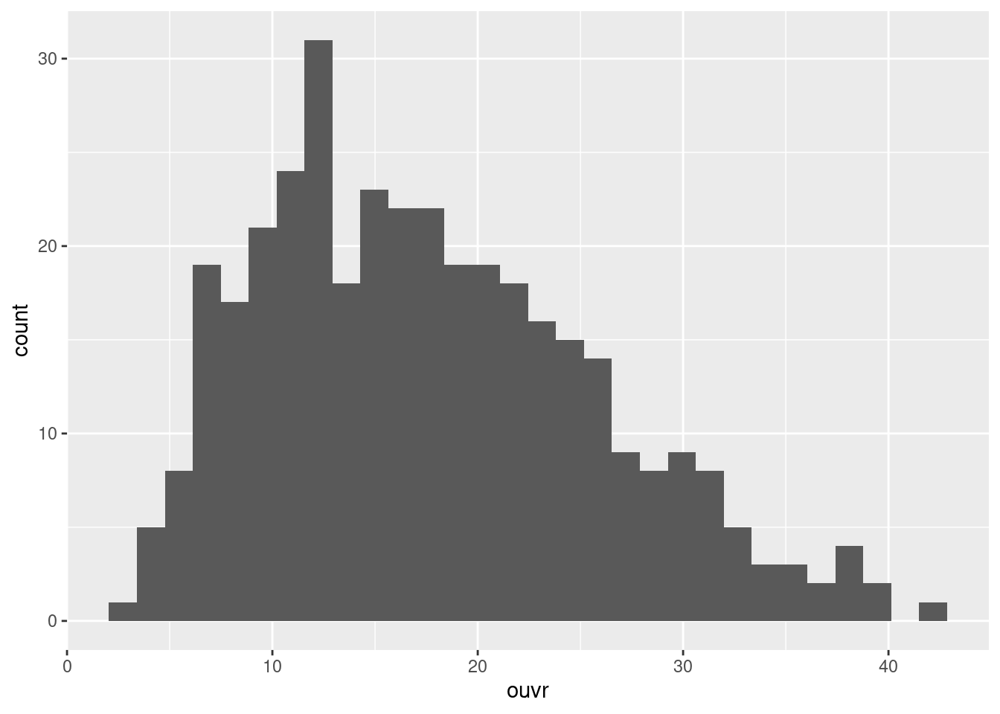
Note
Quand on spécifie une variable, inutile d’indiquer le nom du tableau de données sous la forme rp$ouvr, car ggplot2 recherche automatiquement la variable dans le tableau de données indiqué avec le paramètre data. On peut donc se contenter de ouvr.
Certains geom prennent plusieurs paramètres. Ainsi, si on veut représenter un nuage de points, on peut le faire en ajoutant un geom_point. On doit alors indiquer à la fois la position en x (la variable sur l’axe horizontal) et en y (la variable sur l’axe vertical) de ces points, il faut donc passer ces deux arguments à aes() :
ggplot(rp) +geom_point(aes(x = dipl_sup, y = cadres))
On peut modifier certains attributs graphiques d’un geom en lui passant des arguments supplémentaires. Par exemple, pour un nuage de points, on peut modifier la couleur des points avec l’argument color, leur taille avec l’argument size, et leur transparence avec l’argument alpha :
On notera que dans ce cas les arguments sont dans la fonction geom mais à l’extérieur du aes(). Plus d’explications sur ce point dans quelques instants.
Exemples de geom
Il existe un grand nombre de geom, décrits en détail dans la documentation officielle. Outre les geom_histogram et geom_point que l’on vient de voir, on pourra noter les geom suivants.
geom_boxplot
geom_boxplot permet de représenter des boîtes à moustaches. On lui passe en y la variable numérique dont on veut étudier la répartition, et en x la variable qualitative contenant les classes qu’on souhaite comparer. Ainsi, si on veut comparer la répartition du pourcentage de maisons en fonction du département de la commune, on pourra faire :
ggplot(rp) +geom_boxplot(aes(x = departement, y = maison))
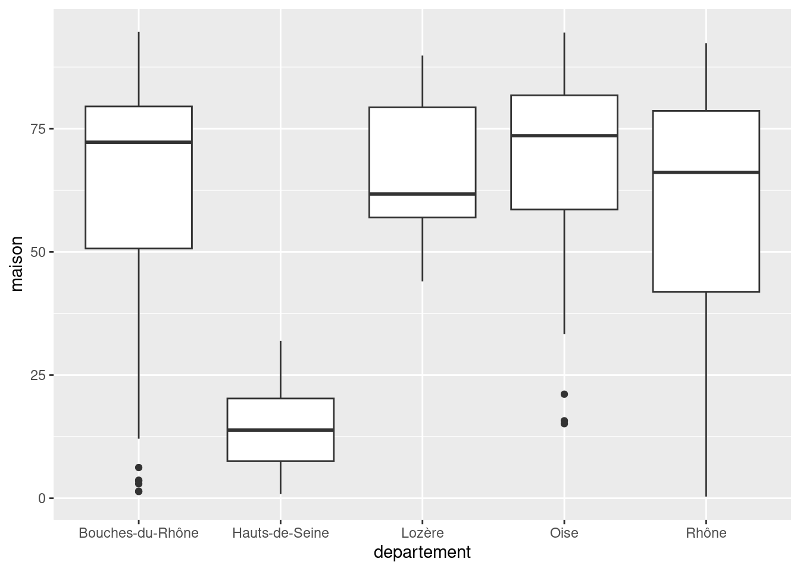
geom_violin
geom_violin est très semblable à geom_boxplot, mais utilise des graphes en violon à la place des boîtes à moustache.
ggplot(rp) +geom_violin(aes(x = departement, y = maison))
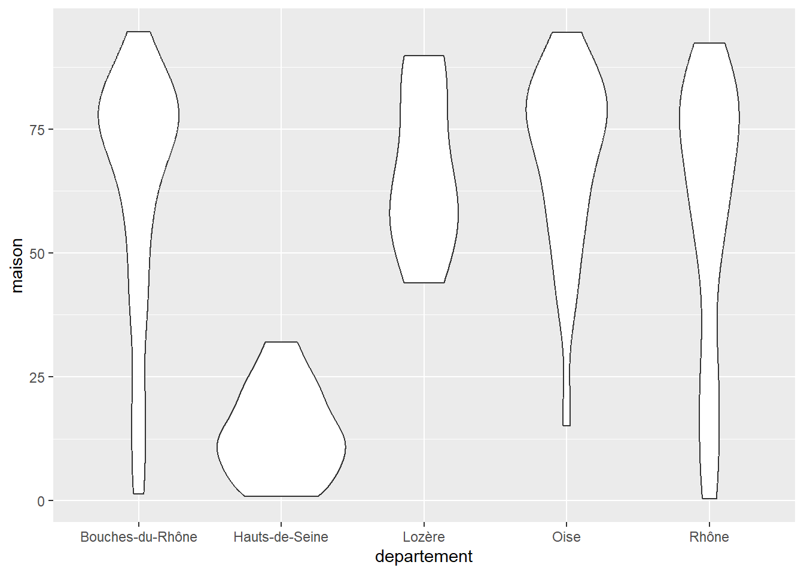
Les graphes en violon peuvent donner une lecture plus fine des différences de distribution selon les classes. Comme pour les graphiques de densité, on peut faire varier le niveau de “détail” de la représentation en utilisant l’argument bw (bande passante).
ggplot(rp) +geom_violin(aes(x = departement, y = maison),bw =2 )
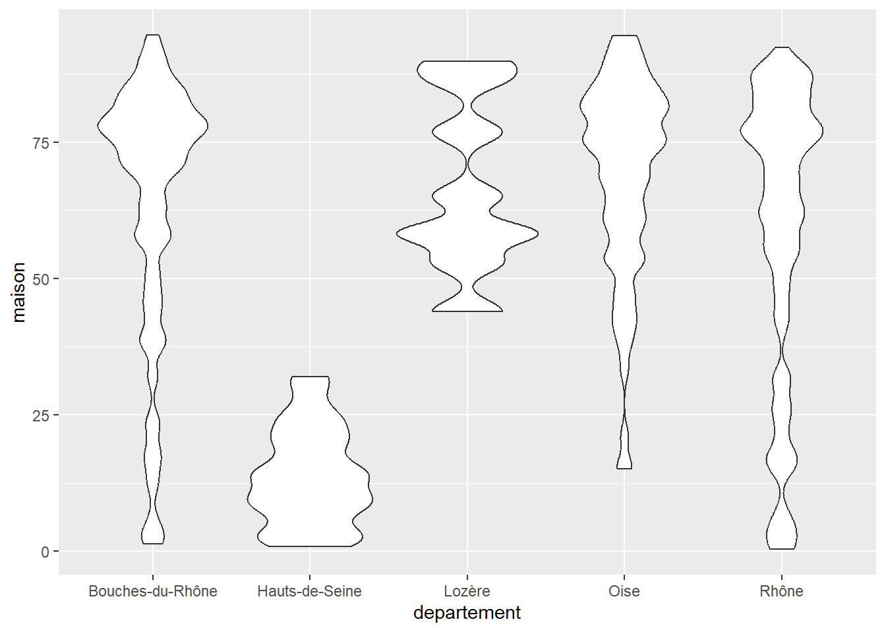
geom_bar et geom_col
geom_bar permet de produire un graphique en bâtons (barplot). On lui passe en x la variable qualitative dont on souhaite représenter l’effectif de chaque modalité.
Par exemple, si on veut afficher le nombre de communes de notre jeu de données pour chaque département :
ggplot(rp) +geom_bar(aes(x = departement))
Si on préfère avoir un graphique en barres horizontales, il suffit de passer la variable comme attribut y plutôt que x.
ggplot(rp) +geom_bar(aes(y = departement))
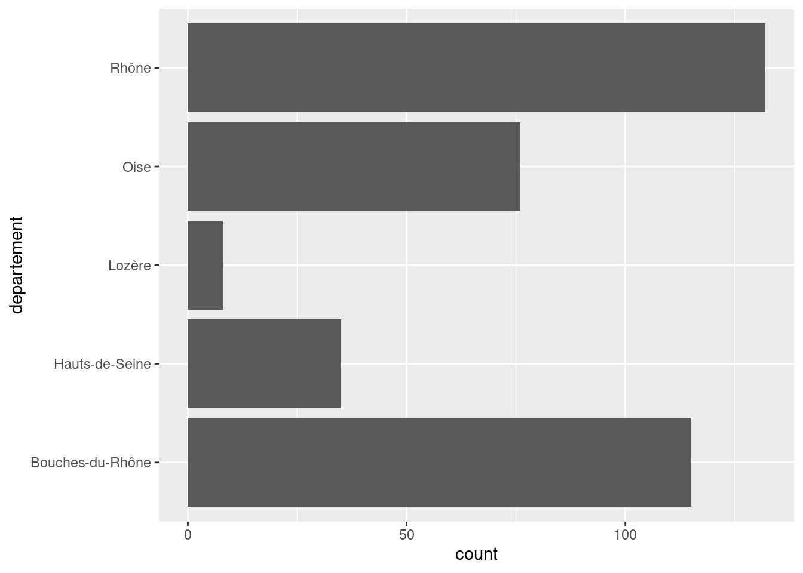
Une autre possibilité est d’utiliser coord_flip(), qui permet d’intervertir l’axe horizontal et l’axe vertical.
À noter que coord_flip() peut s’appliquer à n’importe quel graphique ggplot2.
Parfois, on a déjà calculé le tri à plat de la variable à représenter. Dans ce cas on souhaite représenter les effectifs directement, sans les calculer.
C’est le cas par exemple si on a les données sous la forme suivante dans un tableau de données nommé tab :
tab
departement n
1 Bouches-du-Rhône 115
2 Hauts-de-Seine 35
3 Lozère 8
4 Oise 76
5 Rhône 132
Dans ce cas on peut utiliser geom_col. Il faut alors spécifier, en plus de l’argument x, un argument y indiquant la variable contenant la hauteur des barres. Dans notre exemple, il s’agit de la variable n.
ggplot(tab) +geom_col(aes(x = departement, y = n))
Que ce soit pour geom_bar ou geom_col, on peut modifier l’apparence du graphique en passant des arguments supplémentaires comme fill ou width.
geom_text permet d’afficher des étiquettes de texte. On doit lui fournir trois paramètres dans aes : x et y pour la position des étiquettes, et label pour leur texte.
Par exemple, si on souhaite représenter le nuage croisant la part des diplômés du supérieur et la part de cadres, mais en affichant le nom de la commune (variable commune) plutôt qu’un simple point, on peut faire :
geom_label est identique à geom_text, mais avec une présentation un peu différente.
ggplot(rp) +geom_label(aes(x = dipl_sup, y = cadres, label = commune))
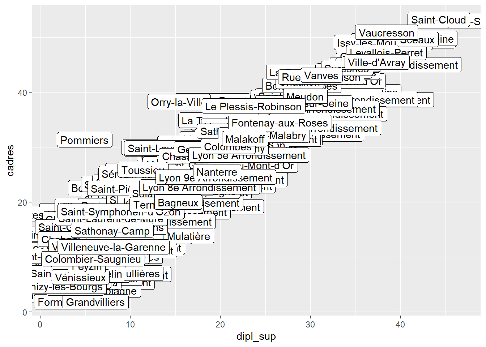
geom_density
geom_density permet d’afficher l’estimation de densité d’une variable numérique. Son usage est similaire à celui de geom_histogram.
Ainsi, si on veut afficher la densité de la répartition de la part des cadres dans les communes de notre jeu de données :
ggplot(rp) +geom_density(aes(x = cadres))
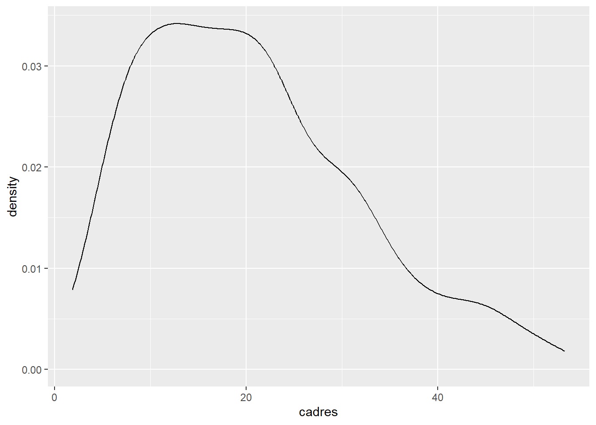
On peut utiliser différents arguments pour ajuster le calcul de l’estimation de densité, parmi lesquels kernel et bw (voir la page d’aide de la fonction density pour plus de détails). bw (abbréviation de bandwidth, bande passante) permet de régler la “finesse” de l’estimation de densité, un peu comme le choix du nombre de classes dans un histogramme :
ggplot(rp) +geom_density(aes(x = cadres), bw =1)
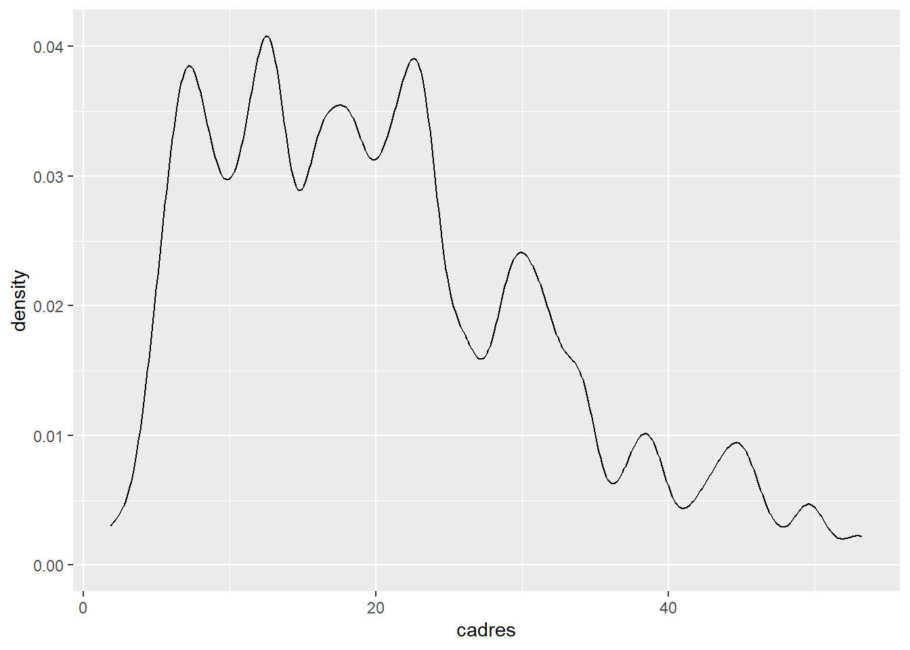
geom_line
geom_line trace des lignes connectant les différentes observations entre elles. Il est notamment utilisé pour la représentation de séries temporelles. On passe à geom_line deux paramètres : x et y. Les observations sont alors connectées selon l’ordre des valeurs passées en x.
Comme il n’y a pas de données adaptées pour ce type de représentation dans notre jeu de données d’exemple, on va utiliser ici le jeu de données economics inclus dans ggplot2 et représenter l’évolution du taux de chômage aux États-Unis (variable unemploy) dans le temps (variable date) :
ggplot(economics) +geom_line(aes(x = date, y = unemploy))
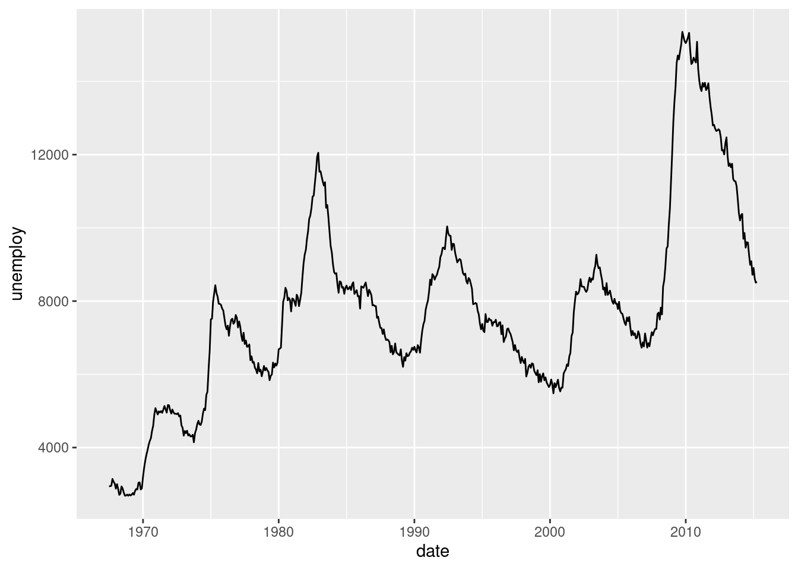
Mappages
Un mappage, dans ggplot2, est une mise en relation entre un attribut graphique du geom (position, couleur, taille…) et une variable du tableau de données.
Ces mappages sont passés aux différents geom via la fonction aes() (abbréviation d’aesthetic).
Exemples de mappages
On a déjà vu les mappages x et y pour un nuage de points. Ceux-ci signifient que la position d’un point donné horizontalement (x) et verticalement (y) dépend de la valeur des variables passées comme arguments x et y dans aes().
ggplot(rp) +geom_point(aes(x = dipl_sup, y = cadres) )
Mais on peut ajouter d’autres mappages. Par exemple, color permet de faire varier la couleur des points automatiquement en fonction des valeurs d’une troisième variable. Ainsi, on peut vouloir colorer les points selon le département de la commune correspondante.
ggplot(rp) +geom_point(aes(x = dipl_sup, y = cadres, color = departement) )
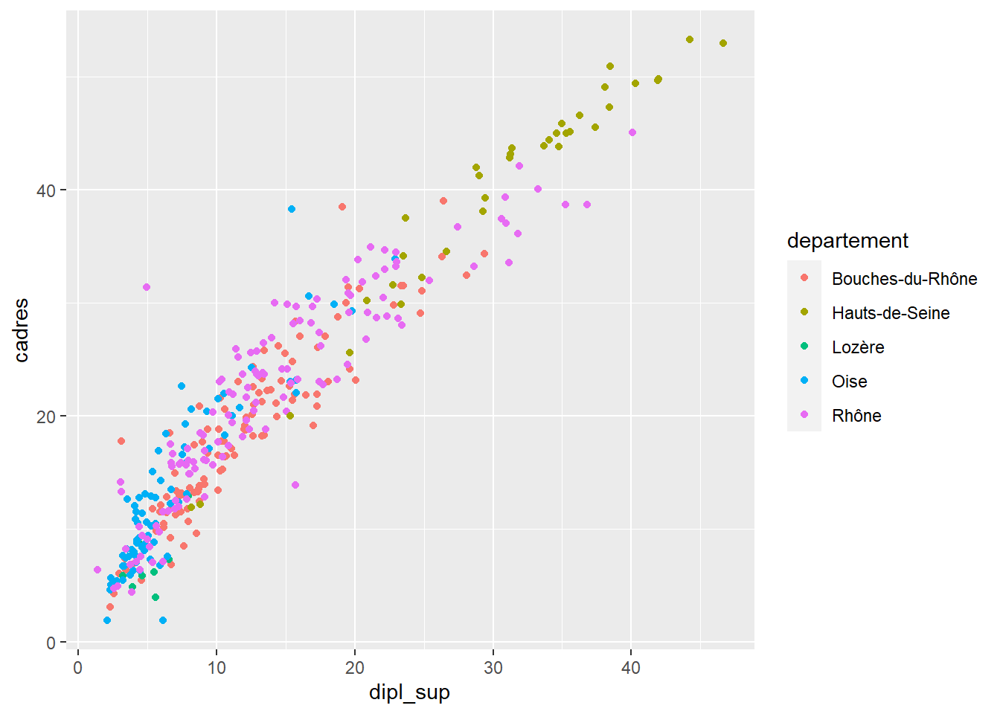
On peut aussi faire varier la taille des points avec size. Ici, la taille dépend de la population totale de la commune :
ggplot(rp) +geom_point(aes(x = dipl_sup, y = cadres, color = departement, size = pop_tot) )
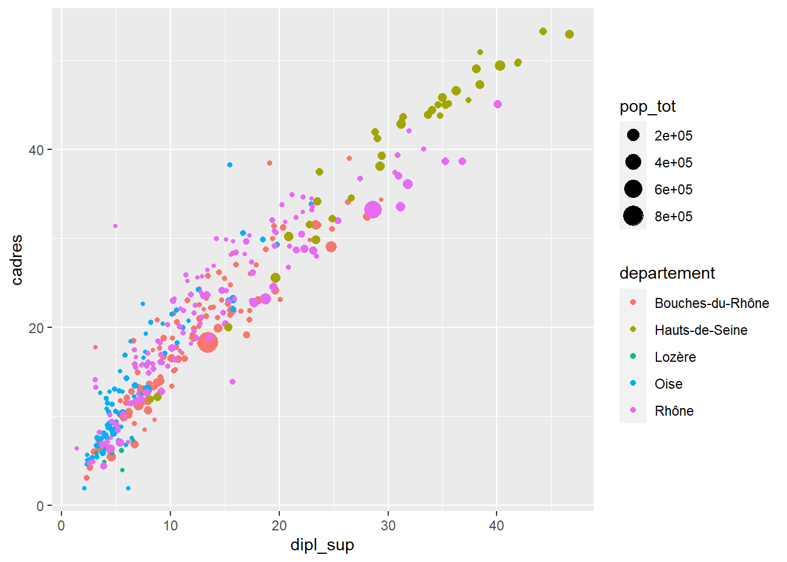
On peut même associer la transparence des points à une variable avec alpha :
ggplot(rp) +geom_point(aes(x = dipl_sup, y = cadres, color = departement, size = pop_tot, alpha = maison) )
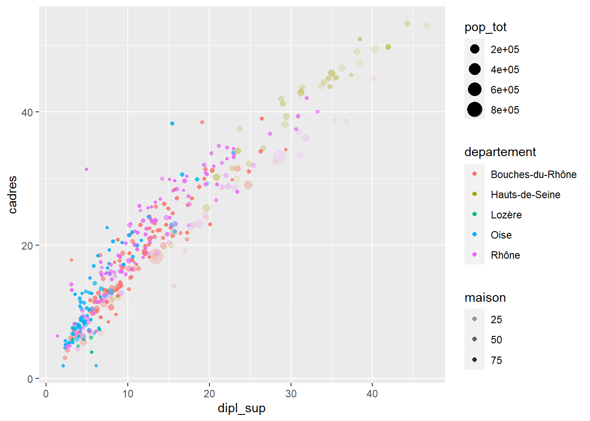
Chaque geom possède sa propre liste de mappages.
aes() or not aes() ?
Comme on l’a déjà vu, parfois on souhaite changer un attribut sans le relier à une variable : c’est le cas par exemple si on veut représenter tous les points en rouge. Dans ce cas on utilise toujours l’attribut color, mais comme il ne s’agit pas d’un mappage, on le définit à l’extérieur de la fonction aes().
ggplot(rp) +geom_point(aes(x = dipl_sup, y = cadres),color ="red" )
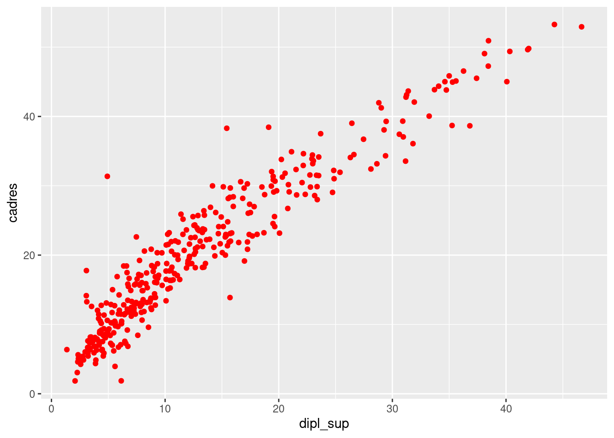
Par contre, si on veut faire varier la couleur en fonction des valeurs prises par une variable, on réalise un mappage, et on doit donc placer l’attribut colorà l’intérieur de aes().
ggplot(rp) +geom_point(aes(x = dipl_sup, y = cadres, color = departement) )
On peut mélanger attributs liés à une variable (mappage, donc dans aes()) et attributs constants (donc à l’extérieur). Dans l’exemple suivant, la taille varie en fonction de la variable pop_tot, mais la couleur est constante pour tous les points.
Si on établit un lien entre les valeurs d’une variable et un attribut graphique, on définit un mappage, et on le déclare dans aes(). Sinon, on modifie l’attribut de la même manière pour tous les points, et on le définit en-dehors de la fonction aes().
geom_bar et position
Un des mappages possibles de geom_bar est l’attribut fill, qui permet de tracer des barres de couleur différentes selon les modalités d’une deuxième variable :
ggplot(rp) +geom_bar(aes(x = departement, fill = pop_cl))
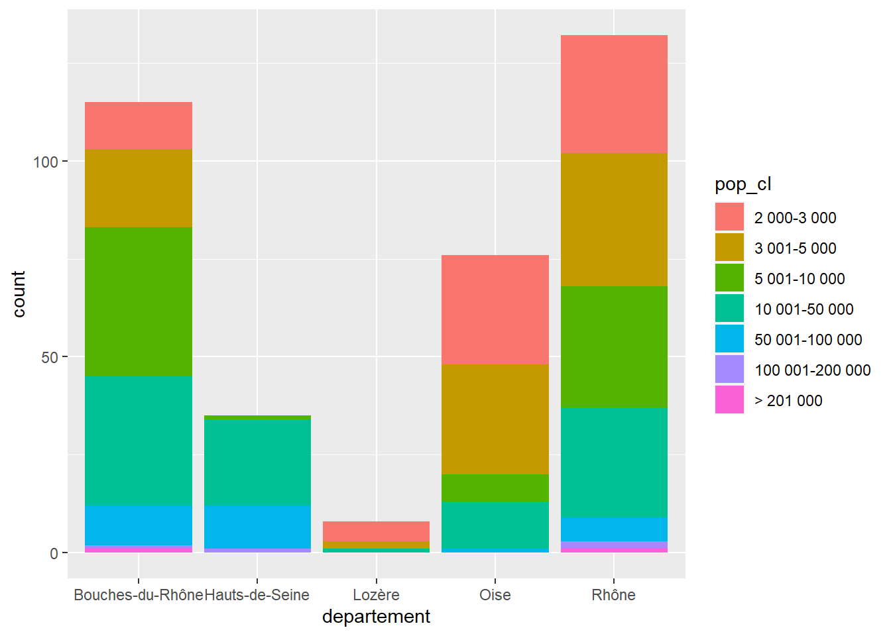
L’attribut position de geom_bar permet d’indiquer comment les différentes barres doivent être positionnées. Par défaut l’argument vaut position = "stack" et elles sont donc “empilées”. Mais on peut préciser position = "dodge" pour les mettre côte à côte.
ggplot(rp) +geom_bar(aes(x = departement, fill = pop_cl),position ="dodge" )
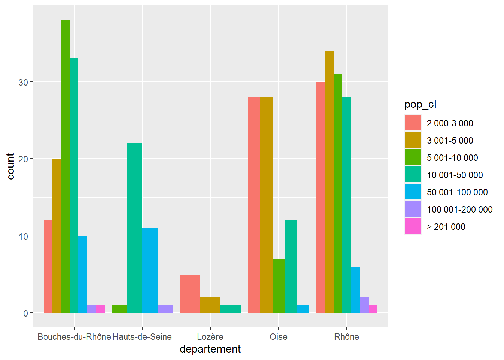
Ou encore position = "fill" pour représenter non plus des effectifs, mais des proportions.
ggplot(rp) +geom_bar(aes(x = departement, fill = pop_cl),position ="fill" )
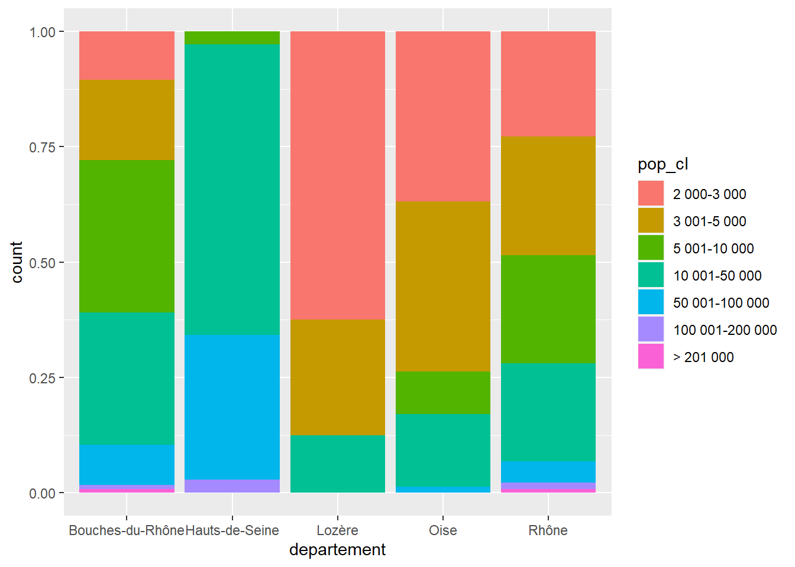
Là encore, on peut utiliser coord_flip() si on souhaite une visualisation avec des barres horizontales.
ggplot(rp) +geom_bar(aes(x = departement, fill = pop_cl),position ="fill" ) +coord_flip()
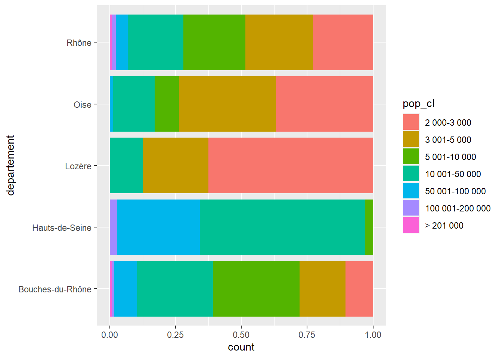
Représentation de plusieurs geom
On peut représenter plusieurs geom simultanément sur un même graphique, il suffit de les ajouter à tour de rôle avec l’opérateur +.
Par exemple, on peut superposer la position des points au-dessus d’un boxplot. On va pour cela ajouter un geom_point après avoir ajouté notre geom_boxplot.
ggplot(rp) +geom_boxplot(aes(x = departement, y = maison)) +geom_point(aes(x = departement, y = maison),col ="red", alpha =0.2 )
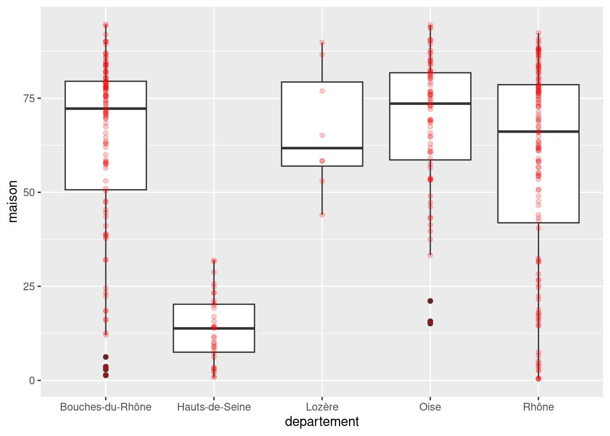
Note
Quand une commande ggplot2 devient longue, il peut être plus lisible de la répartir sur plusieurs lignes. Dans ce cas, il faut penser à placer l’opérateur + en fin de ligne, afin que R comprenne que la commande n’est pas complète et qu’il prenne en compte la suite.
Pour un résultat un peu plus lisible, on peut remplacer geom_point par geom_jitter, qui disperse les points horizontalement et facilite leur visualisation.
ggplot(rp) +geom_boxplot(aes(x = departement, y = maison)) +geom_jitter(aes(x = departement, y = maison),col ="red", alpha =0.2 )
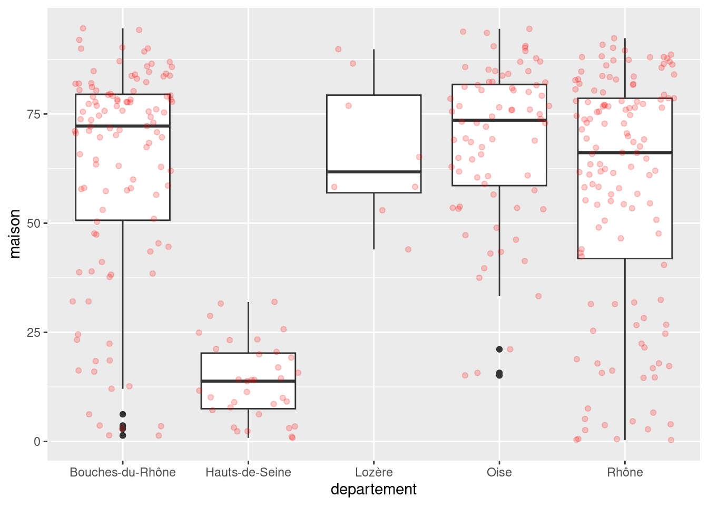
Pour simplifier un peu le code, plutôt que de déclarer les mappages dans chaque geom, on peut les déclarer dans l’appel à ggplot(). Ils seront automatiquement “hérités” par les geom ajoutés (sauf s’ils redéfinissent les mêmes mappages).
On peut associer à différents geom des sources de données différentes. Supposons qu’on souhaite afficher sur un nuage de points les noms des communes de plus de 50000 habitants. On commencer par créer un tableau de données contenant uniquement ces communes à l’aide de la fonction filter.
com50 <-filter(rp, pop_tot >=50000)
On fait ensuite le nuage de points comme précédemment :
Pour superposer les noms de communes de plus de 50 000 habitants, on peut ajouter un geom_text, mais en spécifiant que les données proviennent du nouveau tableau com50 et non de notre tableau initial rp. On le fait en passant un argument data spécifique à geom_text :
On souhaite comparer cette distribution de la part des cadres selon le département, et donc faire un histogramme pour chacun de ces départements. C’est ce que permettent les fonctions facet_wrap et facet_grid.
facet_wrap prend un paramètre de la forme vars(variable), où variable est le nom de la variable en fonction de laquelle on souhaite faire les différents graphiques. Ceux-ci sont alors affichés les uns à côté des autres et répartis automatiquement dans la page.
Pour facet_grid, les graphiques sont disposés selon une grille. La fonction prend alors deux arguments, rows et cols, auxquels on passe les variables à afficher en ligne ou en colonne via la fonction vars().
Un des intérêts du faceting dans ggplot2 est que tous les graphiques générés ont les mêmes échelles, ce qui permet une comparaison directe.
Enfin, notons qu’on peut même faire du faceting sur plusieurs variables à la fois. On peut par exemple faire des histogrammes de la répartition de la part des cadres pour chaque croisement des variables departement et pop_cl :
L’histogramme en haut à gauche représente la répartition du pourcentage de cadres parmi les communes de 2000 à 3000 habitants dans les Bouches-du-Rhône, etc.
Scales
On a vu qu’avec ggplot2 on définit des mappages entre des attributs graphiques (position, taille, couleur, etc.) et des variables d’un tableau de données. Ces mappages sont définis, pour chaque geom, via la fonction aes().
Les scales dans ggplot2 permettent de modifier la manière dont un attribut graphique va être relié aux valeurs d’une variable, et dont la légende correspondante va être affichée. Par exemple, pour l’attribut color, on pourra définir la palette de couleur utilisée. Pour size, les tailles minimales et maximales, etc.
Pour modifier une scale existante, on ajoute un nouvel élément à notre objet ggplot2 avec l’opérateur +. Cet élément prend la forme scale_<attribut>_<type>.
Voyons tout de suite quelques exemples.
scale_size
Si on souhaite modifier les tailles minimales et maximales des objets quand on a effectué un mappage de type size, on peut utiliser la fonction scale_size et son argument range.
Les scalesscale_x_<type> et scale_y_<type> modifient les axes x et y du graphique.
scale_x_continuous et scale_y_continuous s’appliquent lorsque la variable x ou y est numérique (quantitative).
C’est le cas de notre nuage de points croisant part de cadres et part de diplômés du supérieur.
ggplot(rp) +geom_point(aes(x = dipl_sup, y = cadres))
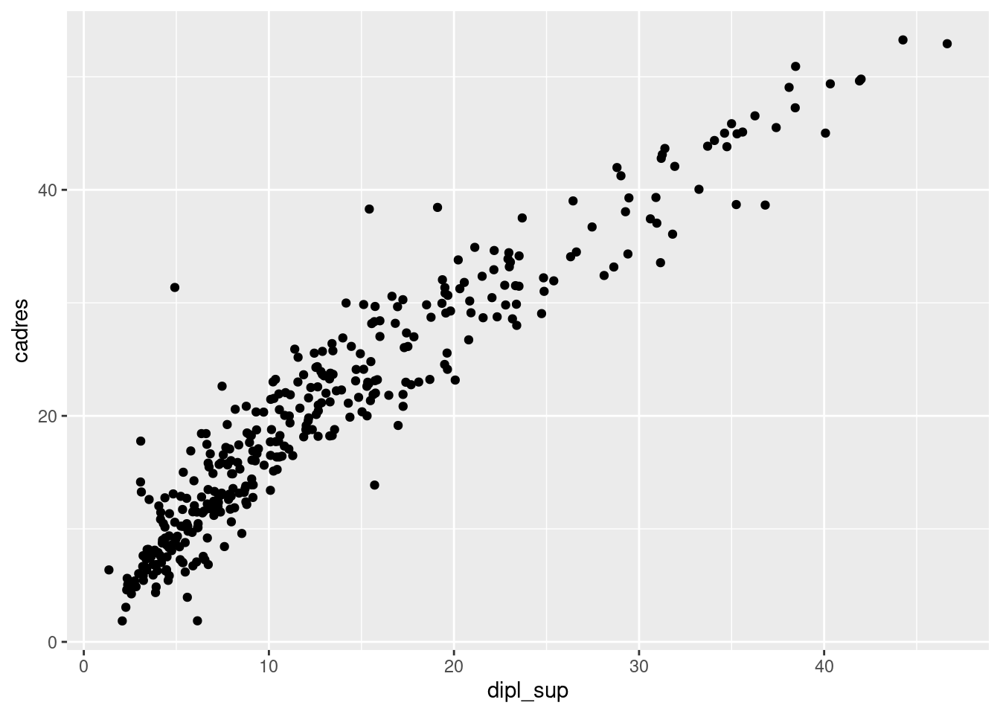
Comme on représente des pourcentages, on peut vouloir forcer les axes x et y à s’étendre des valeurs 0 à 100. On peut le faire en ajoutant un élément scale_x_continuous et un élément scale_y_continuous, et en utilisant leur argument limits.
Là aussi, on peut modifier les étiquettes des axes en indiquant une chaîne de caractères en premier argument.
ggplot(rp) +geom_point(aes(x = dipl_sup, y = cadres)) +scale_x_continuous("Part des diplômés du supérieur (%)", limits =c(0, 100)) +scale_y_continuous("Part des cadres (%)", limits =c(0, 100))
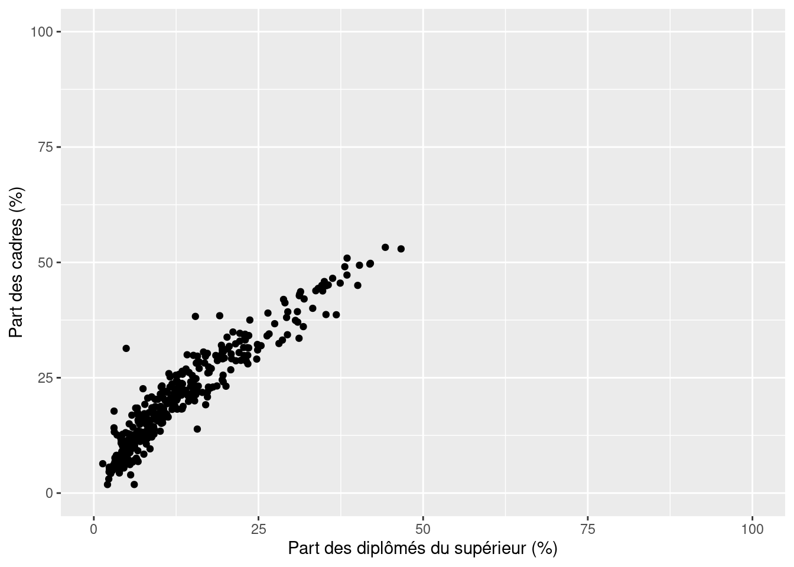
On peut utiliser scale_x_log10 et scale_y_log10 pour passer un axe à une échelle logarithmique.
ggplot(rp) +geom_point(aes(x = dipl_sup, y = cadres)) +scale_x_log10("Diplômés du supérieur")
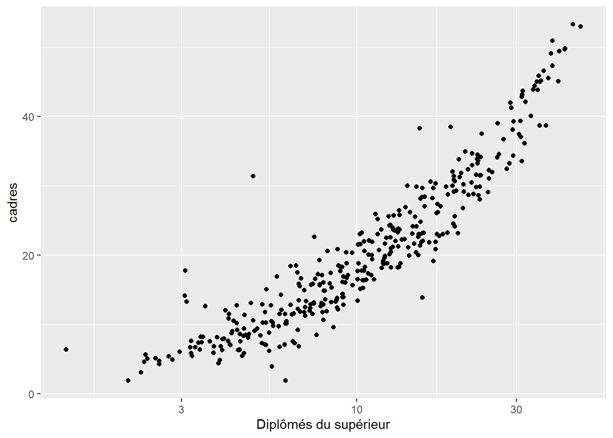
scale_x_discrete et scale_y_discrete s’appliquent lorsque l’axe correspond à une variable discrète (qualitative). C’est le cas par exemple de l’axe des x dans un diagramme en barres.
Ces scales permettent, entre autre, de modifier les palettes de couleur utilisées pour le dessin (color) ou le remplissage (fill) des éléments graphiques. Dans ce qui suit, pour chaque fonction scale_color présentée il existe une fonction scale_fill équivalente et avec en général les mêmes arguments.
Variables quantitatives
Le graphique suivant colore les points selon la valeur d’une variable numérique quantitative (ici la part de chômeurs) :
ggplot(rp) +geom_point(aes(x = dipl_sup, y = cadres, color = chom))
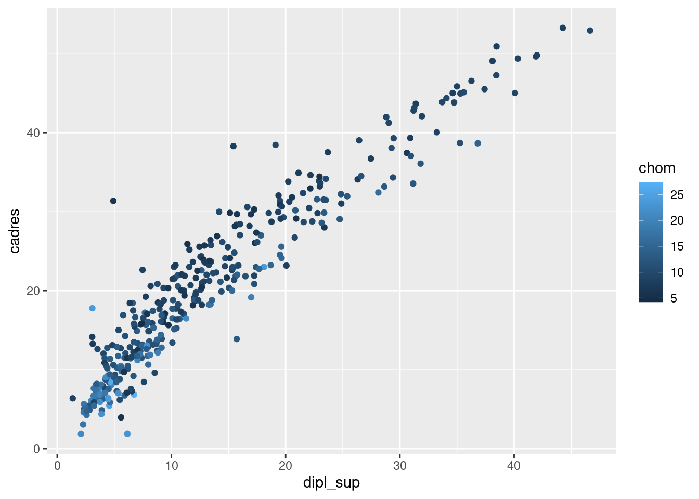
On peut modifier les couleurs utilisées avec les arguments low et high de la fonction scale_color_gradient. Ici on souhaite que la valeur la plus faible soit blanche, et la plus élevée rouge :
ggplot(rp) +geom_point(aes(x = dipl_sup, y = cadres, color = chom)) +scale_color_gradient("Taux de chômage", low ="white", high ="red")
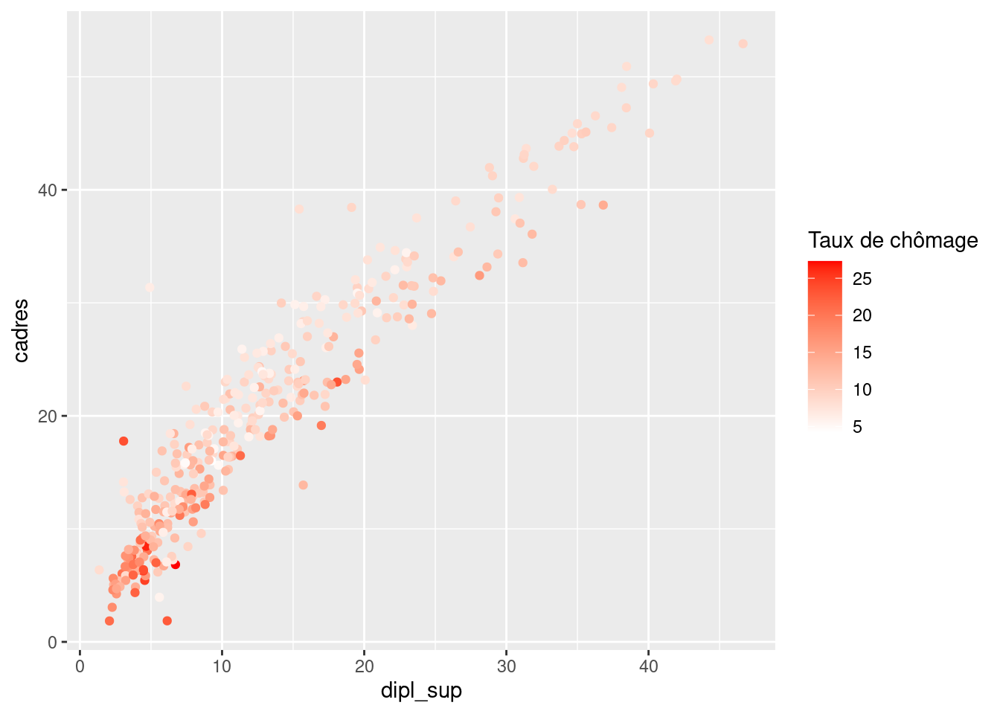
On peut aussi utiliser des palettes prédéfinies. L’une des plus populaires est la palette viridis, accessible en utilisant scale_color_viridis_c :
ggplot(rp) +geom_point(aes(x = dipl_sup, y = cadres, color = chom)) +scale_color_viridis_c("Taux de chômage")
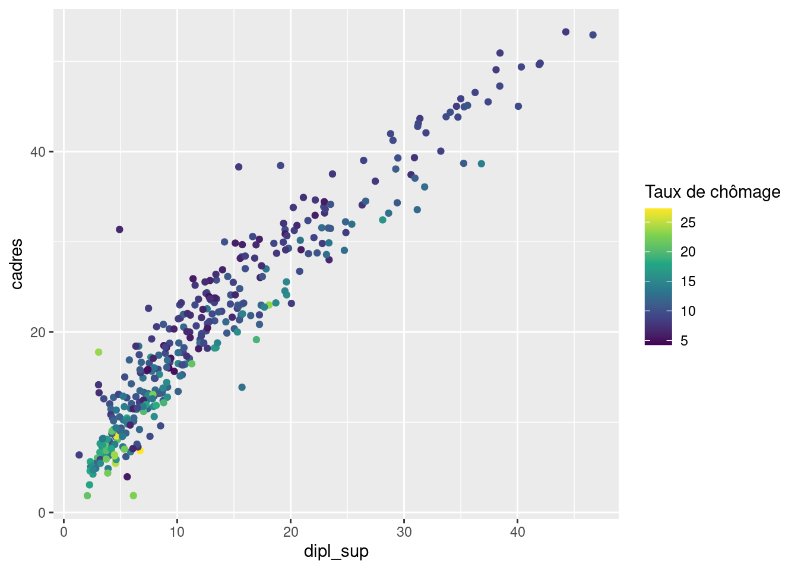
viridis propose également trois autres palettes, magma, inferno et plasma, accessibles via l’argument option :
ggplot(rp) +geom_point(aes(x = dipl_sup, y = cadres, color = chom)) +scale_color_viridis_c("Taux de chômage", option ="plasma")
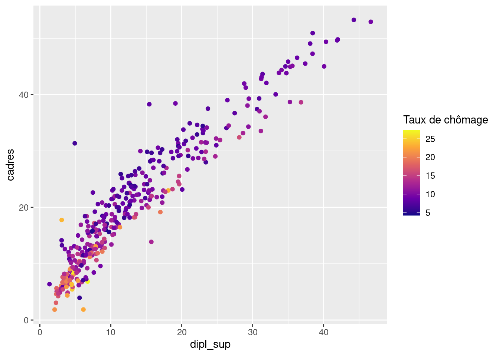
On peut aussi utiliser scale_color_distiller, qui transforme une des palettes pour variable qualitative de scale_color_brewer en palette continue pour variable numérique :
ggplot(rp) +geom_point(aes(x = dipl_sup, y = cadres, color = chom)) +scale_color_distiller("Taux de chômage", palette ="Spectral")
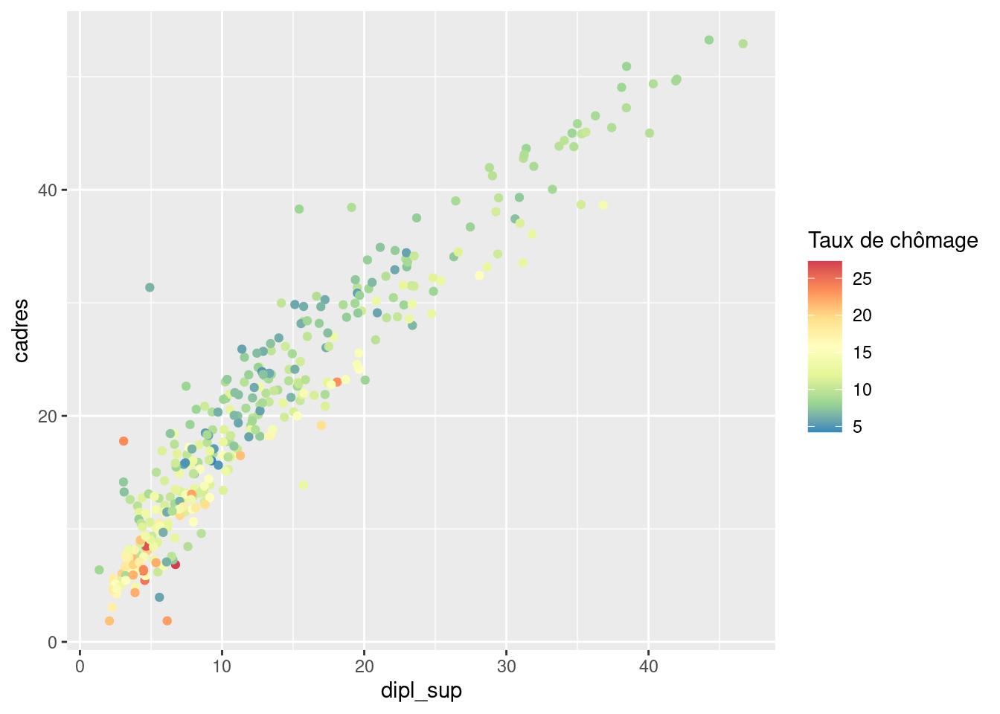
La liste des palettes de scale_color_brewer est indiquée en fin de section suivante.
Variables qualitatives
Si on a fait un mappage avec une variable discrète (qualitative), comme ici avec le département :
ggplot(rp) +geom_point(aes(x = dipl_sup, y = cadres, color = departement))
Une première possibilité est de modifier la palette manuellement avec scale_color_manual et son argument values :
ggplot(rp) +geom_point(aes(x = dipl_sup, y = cadres, color = departement)) +scale_color_manual("Département",values =c("red", "#FFDD45", rgb(0.1, 0.2, 0.6), "darkgreen", "grey80") )
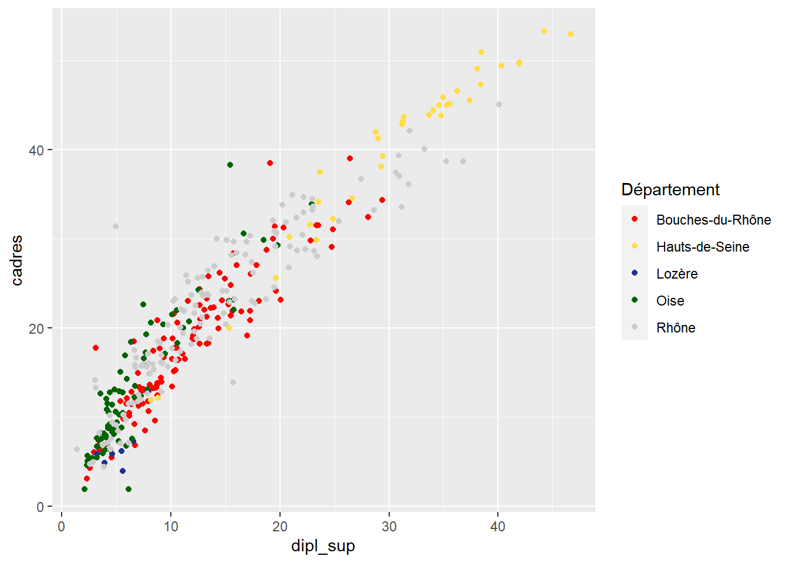
Note
L’exemple précédent montre plusieurs manières de définir manuellement des couleurs dans R :
Par code hexadécimal : "#FFDD45"
En utilisant la fonction rgb et en spécifiant les composantes rouge, vert, bleu par des nombres entre 0 et 1 (et optionnellement une quatrième composante d’opacité, toujours entre 0 et 1) : rgb(0.1,0.2,0.6)
En donnant un nom de couleur : "red", "darkgreen"
La liste complète des noms de couleurs connus par R peut être obtenu avec la fonction colors(). Vous pouvez aussi retrouver en ligne la liste des couleurs et leur nom (PDF).
Il est cependant souvent plus pertinent d’utiliser des palettes prédéfinies. Celles du site Colorbrewer, initialement prévues pour la cartographie, permettent une bonne lisibilité, et peuvent être adaptées pour certains types de daltonisme.
Ces palettes s’utilisent via la fonction scale_color_brewer, en passant le nom de la palette via l’argument palette. Par exemple, si on veut utiliser la palette Set1 :
ggplot(rp) +geom_point(aes(x = dipl_sup, y = cadres, color = departement)) +scale_color_brewer("Département", palette ="Set1")
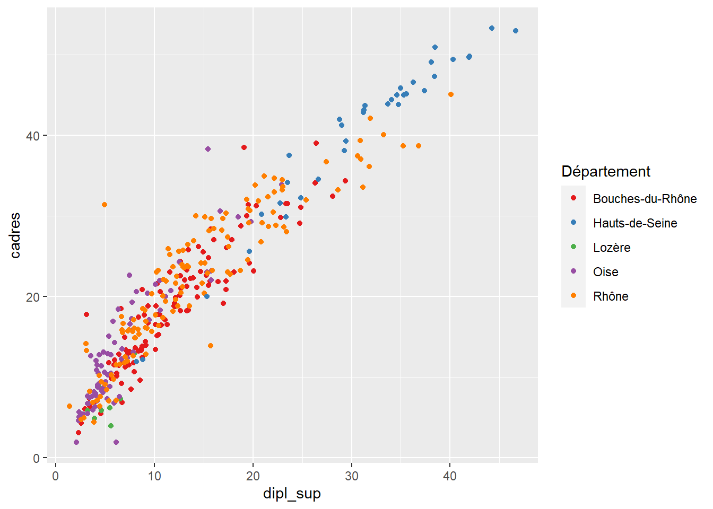
Le graphique suivant, accessible via la fonction display.brewer.all(), montre la liste de toutes les palettes disponibles via scale_color_brewer. Elles sont réparties en trois familles : les palettes séquentielles (pour une variable quantitative), les palettes qualitatives, et les palettes divergentes (typiquement pour une variable quantitative avec une valeur de référence, souvent 0, et deux palettes continues distinctes pour les valeurs inférieures et pour les valeurs supérieures).
On peut cependant modifier manuellement les différents éléments. Par exemple, les fonctions ggtitle, xlab et ylab permettent d’ajouter ou de modifier le titre du graphique, ainsi que les étiquettes des axes x et y :
ggplot(data = rp) +geom_histogram(aes(x = cadres)) +ggtitle("Un bien bel histogramme") +xlab("Pourcentage de cadres") +ylab("Effectif")
Les éléments personnalisables étant nombreux, un bon moyen de se familiariser avec tous les arguments est sans doute l’addin RStudio ggThemeAssist. Pour l’utiliser il suffit d’installer le package du même nom, de sélectionner dans son script RStudio le code correspondant à un graphique ggplot2, puis d’aller dans le menu Addins et choisir ggplot Theme Assistant. Une interface graphique s’affiche alors permettant de modifier les différents éléments. Si on clique sur Done, le code sélectionné dans le script est alors automatiquement mis à jour pour correspondre aux modifications effectuées.
Ce qui permet d’obtenir très facilement des résultats extrêmement moches :
esquisse est un package développé notamment par Victor Perrier de dreamRs et qui fournit une interface graphique pour la construction de graphiques avec ggplot2.
Pour l’utiliser, il faut évidemment préalablement installer l’extension :
install.packages("esquisse")
Pour lancer l’interface, ouvrez le menu Addins dans la barre d’outils de RStudio, et cliquez sur ‘ggplot2’ builder3.
Une fenêtre s’ouvre : la première étape consiste à choisir un data frame de votre environnement, et éventuellement à ne sélectionner que certaines de ses variables.
Une fois le choix effectué, cliquez sur Validate imported data.
L’interface principale s’affiche alors. La liste des variables du data frame apparaît en haut, et vous pouvez les faire glisser dans les zones X, Y, Fill, Color, Size et Facet pour créer des mappages. Le graphique se met automatiquement à jour.
Par défaut, esquisse sélectionne le type de graphique le plus approprié selon la nature de vos variables. Mais vous pouvez choisir un autre type de graphique à l’aide de l’icône en haut à gauche, parmi onze disponibles (dont Auto):
.
Enfin, une série de menus en bas de l’interface vous permet de personnaliser les titres, les annotations (labels), la présentation ou de filtrer des valeurs de vos variables.
Quand vous avez généré un graphique que vous souhaitez conserver, ouvrez le menu Export & code :
Vous y trouverez le code R correspondant au graphique actuellement affiché. Vous pouvez dès lors le copier pour le coller dans votre script, ou cliquer sur Insert code in script pour l’insérer directement dans votre script à l’endroit où se trouve votre curseur.
esquisse ne propose pas (encore) tous les geom ou toutes les possibilités de ggplot2, mais ça peut être un outil très utile et pratique pour une exploration rapide de données ou lorsqu’on est un peu perdu dans la syntaxe et les fonctions de l’extension.
Une “antisèche” (en anglais) résumant en deux pages l’ensemble des fonctions et arguments et disponible soit directement depuis RStudio (menu Help > Cheatsheets > Data visualization with ggplot2) ou en ligne.
Le site associé à ce dernier ouvrage comporte aussi pas mal d’exemples et d’informations intéressantes.
Enfin, si ggplot2 présente déjà un très grand nombre de fonctionnalités, il existe aussi un système d’extensions permettant d’ajouter des geom, des thèmes, etc. Le site ggplot2 extensions est une très bonne ressource pour les parcourir et les découvrir, notamment grâce à sa galerie.
Exercices
Pour les exercices qui suivent, on commence par charger les extensions nécessaires et les données du jeu de données rp2018. On crée alors un objet rp69 comprenant uniquement les communes du Rhône et de la Loire.
library(tidyverse)library(questionr)data(rp2018)rp69 <-filter(rp2018, departement %in%c("Rhône", "Loire"))
Exercice 1
Faire un nuage de points croisant le pourcentage de sans diplôme (dipl_aucun) et le pourcentage d’ouvriers (ouvr).
Exercice 2
Faire un nuage de points croisant le pourcentage de sans diplôme et le pourcentage d’ouvriers, avec les points en rouge et de transparence 0.2.
Exercice 3
Représenter la répartition du pourcentage de propriétaires (variable proprio) selon la taille de la commune en classes (variable pop_cl) sous forme de boîtes à moustaches.
Exercice 4
Représenter la répartition du nombre de communes selon la taille de la commune en classes sous la forme d’un diagramme en bâtons.
Exercice 5
Faire un nuage de points croisant le pourcentage de sans diplôme et le pourcentage d’ouvriers. Faire varier la couleur selon le département (departement).
Sur le même graphique, faire varier la taille des points selon la population totale de la commune (pop_tot).
Enfin, toujours sur le même graphique, rendre les points transparents en plaçant leur opacité à 0.5.
Exercice 6
Représenter la répartition du pourcentage de propriétaires (variable proprio) selon la taille de la commune en classes (variable pop_cl) sous forme de boîtes à moustaches. Faire varier la couleur de remplissage (attribut fill) selon le département.
Exercice 7
Représenter la répartition du nombre de communes selon la taille de la commune en classes (variable pop_cl) sous forme de diagramme en bâtons empilés, avec une couleur différente selon le département.
Faire varier la valeur du paramètre position pour afficher les barres les unes à côté des autres.
Changer à nouveau la valeur du paramètre position pour représenter les proportions de communes de chaque département pour chaque catégorie de taille.
Exercice 8
Faire un nuage de points représentant en abscisse le pourcentage de cadres (cadres) et en ordonnée le pourcentage de diplômés du supérieur (dipl_sup). Représenter ce nuage par deux graphiques différents selon le département en utilisant facet_grid.
Sur le même graphique, faire varier la taille des points selon la population totale de la communes (variable pop_tot) et rendre les points transparents.
Exercice 9
Faire le nuage de points croisant pourcentage de chômeurs (chom) et pourcentage de sans diplôme. Y ajouter les noms des communes correspondant (variable commune), en rouge et en taille 2.5 :
Exercice 10
Dans le graphique précédent, n’afficher que le nom des communes ayant plus de 15% de chômage.
Footnotes
Vous pouvez aussi lancer la commande esquisser::esquisse() dans la Console.↩︎
Il est également possible de renommer des colonnes directement avec select, avec la même syntaxe que pour rename.↩︎
Vous pouvez aussi lancer la commande esquisser::esquisse() dans la Console.↩︎


 Une fois le choix effectué, cliquez sur Validate imported data.
Une fois le choix effectué, cliquez sur Validate imported data.
 .
.